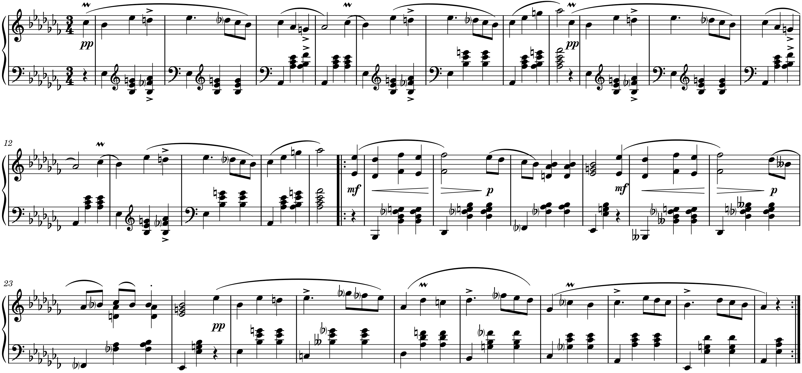
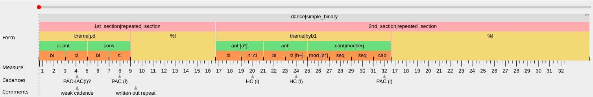

Quickstart
Quickstart
This page walks through the core concepts of the LCMA form annotation standard using a single example. For the complete specification see the Syntax page; for all recognized labels consult the Vocabulary.
To get started you need:
- Download and install the annotation app TiLiA (TimeLineAnnotator): https://tilia-app.com/downloads
- Obtain a
.tlafile that has been prepared for the piece you want to annotate (open it from within TiLiA, not by double-clicking). If you need to prepare one yourself, see the Workflow page. - Familiarize yourself with TiLiA’s hierarchy timeline, the main tool for encoding form analyses: https://tilia-app.com/help/hierarchy-tl


Figure 1 (b) shows a complete analysis. The coloured rectangles are form components, organized in levels: the highest spans the entire piece (dance|simple_binary), the lowest contains individual musical ideas (bi, ci, cad, etc.). Parent levels contain child levels, so the analysis can be read as a tree. Every form component carries a label whose parts are explained below.
Below the hierarchy, TiLiA’s marker timelines hold two additional annotation layers visible in Figure 1 (b): Cadences records cadence labels at the points where they occur (e.g. PAC (i), HC (i)), and Comments provides free-text notes such as “weak cadence” or “written out repeat”.
Formal function
The one thing that can never be absent from a label is a formal function. Every formal function ultimately derives from the temporal qualities beginning, middle, and end: an antecedent is a beginning, a continuation is a middle(+end), a cadential idea is an end, and so on. The function expresses what role a segment plays in its context: ant (antecedent), cont (continuation), cad (cadential idea), bi (basic idea), and so on. In Figure 1 (b) the bottom level shows bi, ci, cad, mod, seq; one level up a: ant, cons, cont|modseq. Functions can be generic (numbered units like 1st_section) or specific (terms from the form-analytic tradition). The full list is in the Vocabulary.
Formal types
When a form component is realized as a recognized formal template, a type follows the function after a pipe | (read “realized as”):
theme|sent → "theme, realized as a sentence"
dance|simple_binary → "dance, realized as a simple binary"Types translate to expected configurations of functions on the child level. In Figure 1 (b), theme|pd (period) contains an antecedent and a consequent; theme|hyb1 (hybrid type 1) contains two antecedent phrases and a continuation. cont|modseq tells us that the continuation is realized as a model–sequence pattern, which is confirmed by the child-level labels mod [a*], seq, cad. Recognized types include sent (sentence), pd (period), hyb1–hyb4, sonata, rondo, and several binary and ternary forms. See Syntax and Examples for details.
Hierarchical segmentation
Every analysis must have a single root spanning the entire piece (see Principles), and the lowest level should correspond to individual musical ideas (see Principles). In Figure 1 (b), from top to bottom:
| Level | Labels | What they express |
|---|---|---|
| 1 | dance|simple_binary |
the whole piece and its form type |
| 2 | 1st_section|repeated_section, 2nd_section|repeated_section |
two repeated halves |
| 3 | theme|pd, %!, theme|hyb1, %! |
themes with their types; %! repeats the preceding subtree |
| 4 | a: ant, cons, ant [a*], ant!, cont|modseq |
phrase-level functions |
| 5 | bi, ci, h: ci, ci [h~], mod [a*], seq, cad |
individual ideas |
The % symbol signifies that the previous form-functional subtree repeats (all child levels are understood to recur, so they need not be duplicated). When the music also repeats — not just the functional structure — combine it with the exact-repetition operator !, yielding %!. Both halves of the Ländler are repeated (the first repeat being written-out), hence %!. See Repeating a subtree.
Names
A component can be given an arbitrary name by prefixing the label with name:, for instance a: ant or h: ci. Names carry no analytical meaning; they exist solely so that other components can refer back to this one via material references (see below). If a component is never referenced, no name is needed.
Material references
Formal functions emerge from the totality of the music — melody, rhythm, harmony, texture — not from any single domain. To signal the recurrence of musical material (of whatever kind, without specifying which), we use material references.
Named references use square brackets containing a previously introduced name. In Figure 1 (b), h: ci names a contrasting idea “h”; later ci [h~] references it with an ornamentation operator ~. Similarly, ant [a*] references “a” with a truncation operator *.
Anonymous references (shorthand) work for immediate repetitions and need no name: operators are appended directly to the label. bi! means “exact repetition of the preceding basic idea”; seq following mod implies sequential repetition of the model. The available operators:
| Operator | Meaning |
|---|---|
! |
exact repetition |
~ |
ornamentation |
* |
truncated repetition |
** |
interpolation |
^ |
local transposition |
° |
adaptation to new formal context |
+ |
extension / expansion |
These can be combined and appear in both named brackets and anonymous shorthand. See Material content and repetition for the full specification.
Common gotchas
cbi(compound basic idea) andci(contrasting idea) are different.cadis a function, not a type: writecad, not|cad.- Do not duplicate subtrees by hand; use
%or% [name]. %is for repeating entire subtrees;!means that (some of the referenced) material repeats exactly. An exact repetition interpreted to have the same form tree is written as%!, but when its an earlier named sub-tree that repeats, we use% [name!](regular material-reference syntax).- Assign names whenever material recurs at a distance; anonymous references only work for immediate repetitions.
Where to go from here
The Intro discusses our conception of musical form. The Principles page illustrates the core rules using Chopin’s Mazurka op. 24/3. The Syntax page is the complete operator reference, the Vocabulary lists every label, and the Examples page walks through annotated pieces with commentary.